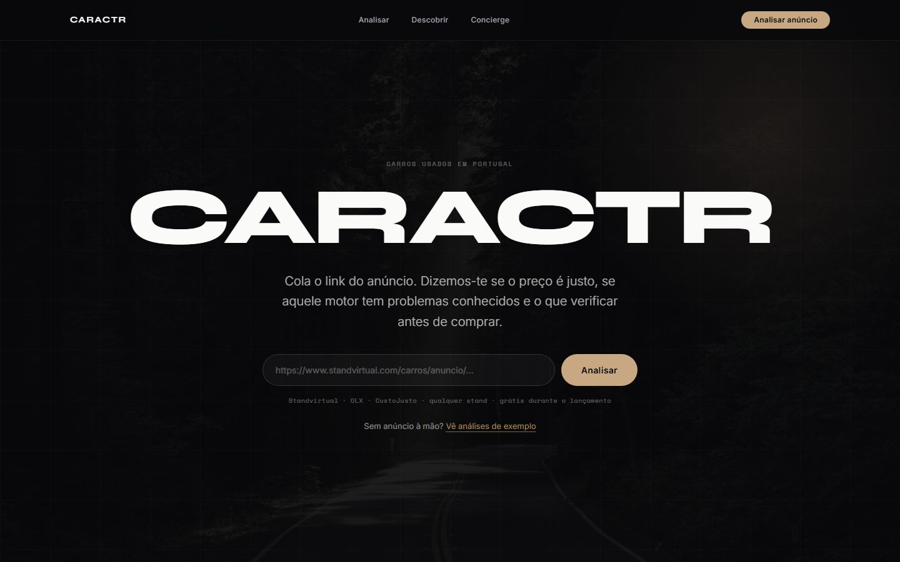
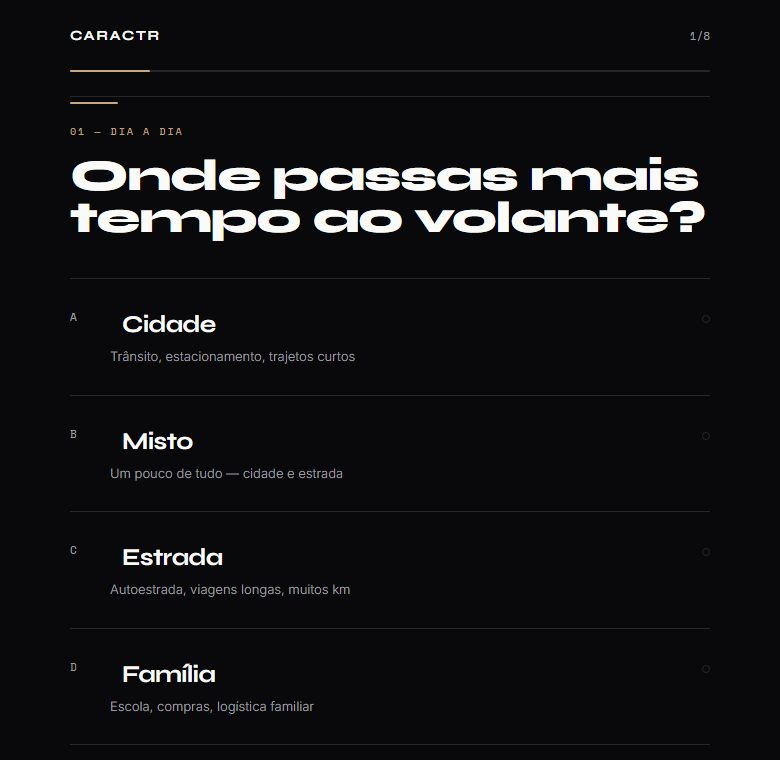
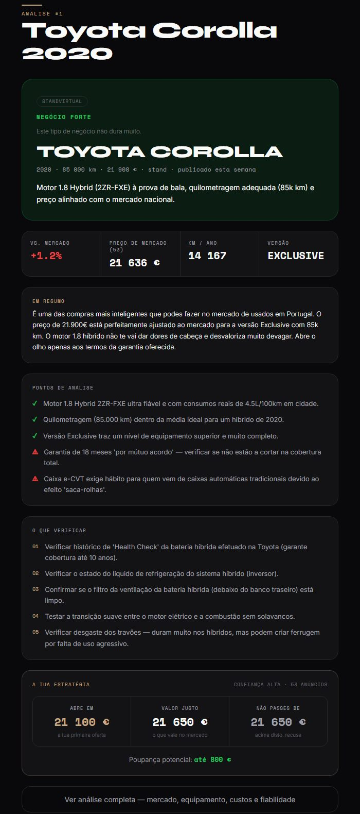
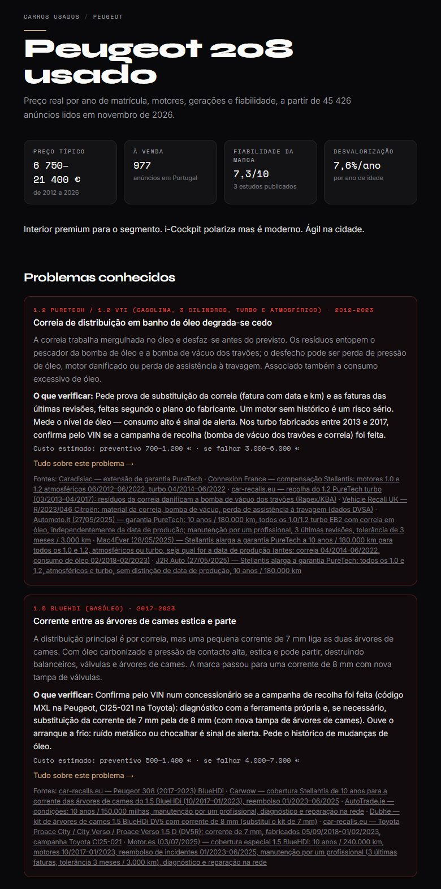

used cars change hands in Portugal every year (approx.)
used cars imported in 2025, a record and 54% of new-car sales
of imported cars carry a damage record, against 25% of domestic ones
The marketplaces are paid by sellers. Nobody sits on the buyer's side of the whole purchase.
Eight questions about your life, not specs. A ranked shortlist with running costs, and a refine step when nothing fits.

Paste a Standvirtual, OLX or dealer link: verdict, like-for-like market position, known engine faults, what to check, how to negotiate.

Price by year from 43k listings, sourced faults with repair costs and warranty cover, what to check before buying.

Tailwind 4, TypeScript. Static model and engine pages generated from the database.
Recommendation engine, ad analysis, negotiation plan, admin and health endpoints.
Catalogue, market prices, faults, recalls. Constraints refuse impossible rows.
httpx scrapers with layered parsing. Marketplaces block datacenter IPs, so pages go through a token-locked relay, with a paste fallback.
Writes the plain-language narrative only. Every number is computed in code. Measured cost: $0.015 per analysis.
CI on every push, database rebuilt from seeds and audited, daily health check, monthly market snapshot.
models in 49 brands
generations, years fact-checked
engines with sourced specs
listings in the market snapshot
curated engine faults, each sourced
production data-audit score
Standvirtual and OLX return 403 to cloud IPs. A token-locked Vercel relay and a paste fallback keep analysis working.
__NEXT_DATA__ → JSON-LD → HTML → Portuguese patterns, each graded, so degradation is visible, not silent.
Pools segmented by fuel and power, trimmed medians, minimum samples. A plug-in hybrid was once priced against base diesels.
A promoted Ferrari once set a Golf's price at €52,000. Listings are now validated before they count.
Fuzzy recall matching pinned an S-Class recall on an A-Class. Matching is now whole-word and year-bound; each audited case is a test.
A five-stage plan grounded in negotiation research: precise offers, shrinking concessions, polite first contact.
Lesson: measure against the free alternative before building the paid one.
Built with an AI pair-programmer (Claude Code). I set the product direction, the data rules and the acceptance criteria, and reviewed the work; the agent wrote much of the code under tests and CI.